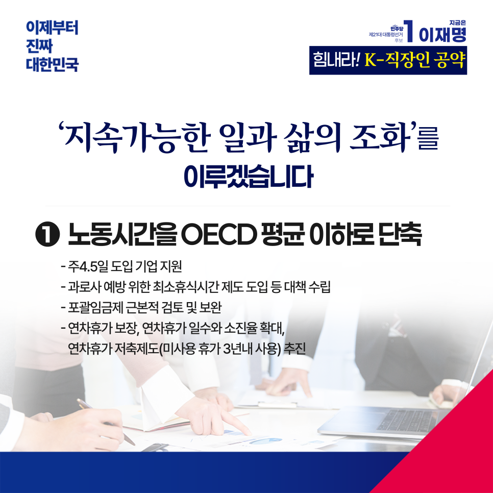
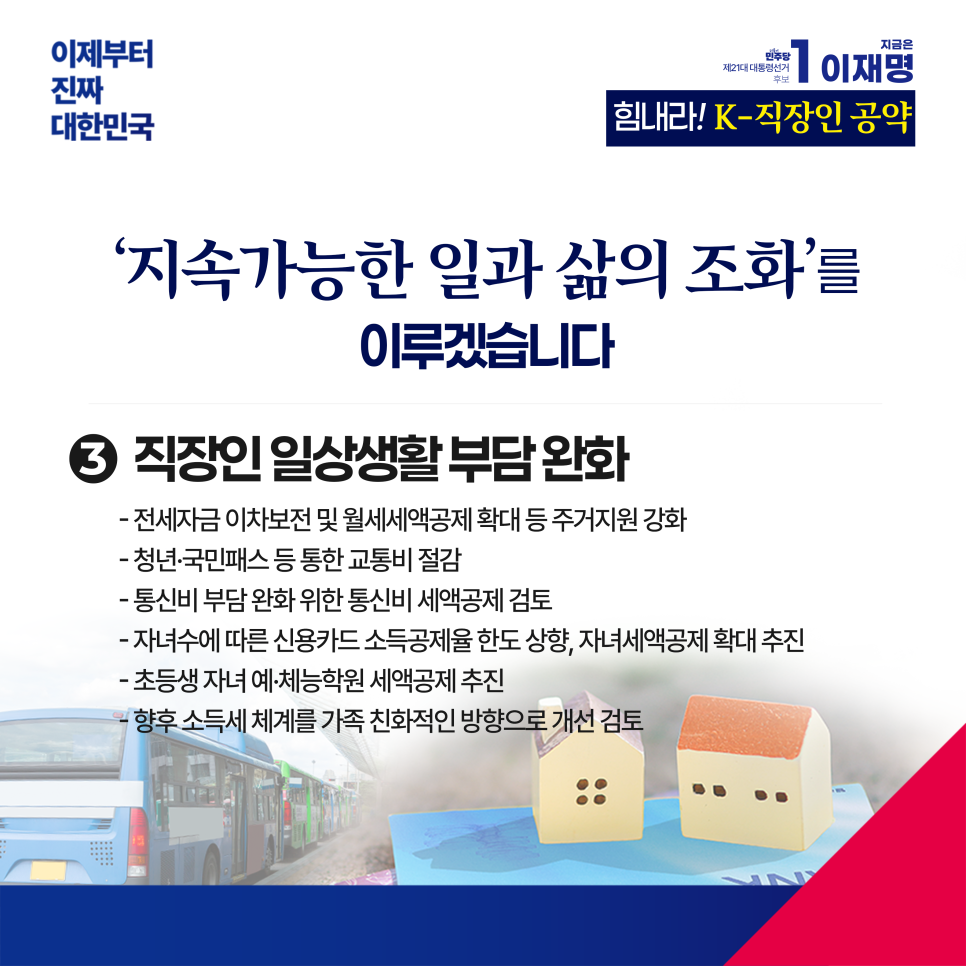

← 메인으로 돌아가기
이재명 대통령후보 정책모음
[노동:직장인]
카카오톡으로 공유하기


휴식과 재충전을 보장하고
생활부담을 완화하겠습니다
우리 사회는 새로운 전환점을 맞이하고 있습니다. 산업화와 민주화를 거치며 눈부신 성취를 이룬 대한민국은 이제 국민 한 사람 한 사람의 ‘삶의 질’을 챙기는 더 높은 단계로 도약해야 합니다.
일하는 시간이 길수록 성공이 보장되던 시대는 이미 지나갔습니다. AI의 등장으로 단순하고 반복적인 업무는 기계가 맡을 것이고, 사람은 창의성과 부가가치를 창출하는 일에 더욱 집중하게 될 것입니다. 이 새로운 시대에 ‘사람’의 가치를 높이기 위해서는 무엇보다 충분한 휴식과 재충전이 필수입니다.
국민 한 명 한 명 삶의 균형과 정신적 안정 그리고 경제적 여유로움을 갖추도록 뒷받침하는 나라, 그것이 우리가 함께 만들어갈 “진짜 대한민국”입니다.
그러나 오늘의 현실은 결코 녹록지 않습니다. 여전한 초과근로, 과도한 업무 스트레스, 늘 부족한 휴식이 직장인의 삶을 지치게 하고 있습니다. 시대 변화에 제대로 부응하지 못하는 제도와 정책이 여전합니다. 이제 ‘지속가능한 일과 삶의 조화’를 위해 과감한 정책 전환에 나서야 합니다.
첫째, 우리나라의 평균 노동시간을 2030년까지 OECD 평균 이하로 단축하겠습니다.
이를 위해서는 국민적인 합의도 필요하지만, 무엇보다 기업들의 적극적 참여가 필수입니다. 주4.5일제를 도입하는 기업에 대해 확실한 지원방안을 만들겠습니다. 장기적으로는 주4일제로 나아가야 합니다.
또한, 과로사를 막고 실노동시간을 단축하기 위한 제도적 근거를 만들어, 효율적인 대책 수립 의무를 국가 등에 부여하겠습니다.
장시간 노동과 ‘공짜 노동’의 원인으로 지목되어 온 포괄임금제를 근본적으로 검토하겠습니다. 이 과정에서 기존의 임금 등 근로조건이 나빠지지 않도록 철저하게 보완하겠습니다. 또한 사용자에게는 근로자의 실근로시간을 측정·기록하도록 의무화하겠습니다.
휴가제도를 획기적으로 개선하겠습니다. 연차휴가 일수와 소진율을 선진국 수준으로 확대하겠습니다. 연차유급휴가 취득 요건을 완화하고, 사용하지 못한 휴가는 연차휴가 저축제도를 통해 3년 안에 사용할 수 있도록 하는 등 편의성을 높이겠습니다.
또한, 연차휴가를 청구하거나 사용한다는 이유로 회사가 근로자에게 불이익을 주는 행위를 금지하겠습니다.
둘째, 직장인들의 재충전을 적극 지원하겠습니다.
우선, 국민휴가 지원 3종 세트(근로자 휴가지원제, 지역사랑 휴가지원제, 숏컷 여행)를 통해 근로자 휴가지원제도를 대폭 확대하겠습니다. 국내 지역관광을 활성화하기 위해 ‘(가칭)지역사랑휴가지원제’를 신설하겠습니다. 국민들이 원하는 지역을 사전예약하면 정부와 지자체가 각각 분담하여 지원해, 보다 쉽고 부담없이 지역관광을 즐길 수 있도록 하겠습니다.
‘1박2일’의 짧은 국내여행 활성화를 위해 ‘숏컷 여행’도 적극 지원하겠습니다. 이를 통해 국내여행 비용부담을 낮추고 관광수요를 진작함으로써 내수 활성화에도 기여하겠습니다.
또한, 현재 정부·기업·근로자가 각각 10만원·10만원·20만원씩 부담하는 근로자휴가지원제도를 활성화하기 위해 정부부담을 늘리고, 수혜대상도 폭넓게 확대하겠습니다.
셋째, 직장인들의 일상생활 부담을 덜겠습니다.
생활의 기본은 주거입니다. 하루의 피로를 풀고, 삶의 에너지를 충전할 수 있는 편안한 공간이 있어야 합니다. 직장생활의 고단함도, 출퇴근길의 고생도 결국 집에 돌아와야 치유됩니다.
이를 위해, 무엇보다도 전월세 관련 주거지원을 강화하겠습니다. 전세자금 이차보전을 확대하는 한편, 월세부담을 덜기 위해 월세세액공제 대상자의 소득기준을 상향하고, 대상주택 범위도 대폭 확대하겠습니다. 아울러, 최근 몇 년간 전세사기로 눈물을 흘린 분들이 너무나도 많습니다. 전세사기 걱정없고 책임이 전가되지 않도록 ‘보증제도’도 개선하겠습니다.
일하러 집을 나서면 일단 교통·통신이 꼭 필요합니다. 직장과 집이 조금 먼 분들에게 매일 발생하는 교통비는 상당한 부담입니다. 청년·국민패스 등을 새롭게 만들어 교통비를 절감하겠습니다. 환승이나 거리병산 추가요금에 따른 부담도 줄이겠습니다.
정보화 사회에서 교통비처럼 필수적으로 지출되는 비용이 통신비입니다. 그런데 우리나라는 교통비 세제혜택은 있지만 통신비는 세제혜택이 없었습니다. 이제 근로자 본인과 가족 중 미성년 자녀, 65세 이상 노부모를 위해 지출한 통신비는 최소한 필요 수준에서의 세액공제 개선을 검토하겠습니다.
자녀 수가 늘면 생활비 지출도 늘고, 신용카드 사용액이 늘어나는 것이 당연합니다. 자녀 수에 따라 신용카드 공제율과 공제 한도 상향을 추진하겠습니다. 여기에 더해 자녀세액 공제 확대 등을 추진하겠습니다.
또한 맞벌이 부모들은 퇴근 무렵까지 초등학생 자녀들을 태권도장을 비롯한 체육시설이나 음악·미술학원에 보내는 것이 현실입니다. 그런데, 현행 세법은 수백만원짜리 영어유치원은 교육비 세액공제를 해주면서 초등학생 태권도장은 교육비 세액공제를 안해줍니다. 고치겠습니다. 교육비 세액공제 대상을 초등학생 자녀의 예체능 부문까지 확대하는 것을 추진하겠습니다.
끝으로, 프랑스는 부부의 소득과 가족수를 함께 고려하는 “가족계수제” 소득세 체계를 도입하여 저출생 극복의 해결책으로 활용했던 사례가 있습니다. 우리나라도 중장기적으로 소득세 체계를 가족친화적인 방식으로 바꿔나가는 방향을 검토하겠습니다.
직장인 여러분!
열심히 일한 뒤 충분한 휴식과 여가를 누릴 수 있고, 이를 가능케 하는 경제적 기반이 마련된 삶. 내일이 기대되는 삶, 그런 ‘진짜 대한민국’을 저 이재명이 만들겠습니다.